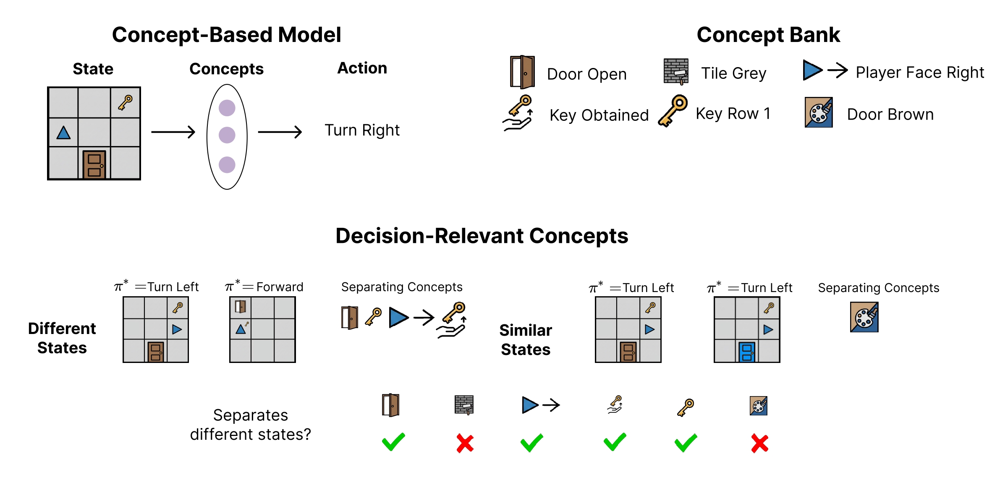
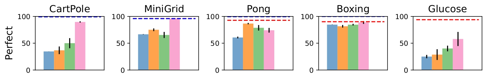
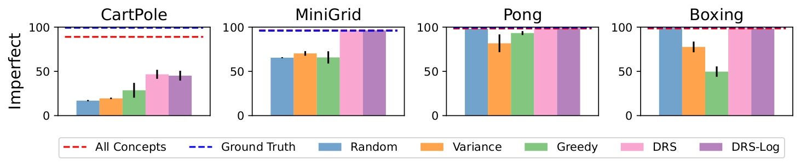
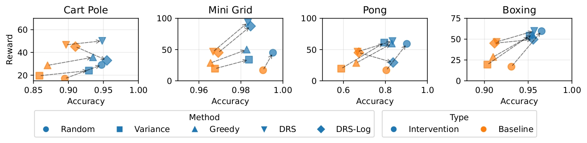

Concept-based models make predictions via intermediate human-understandable concepts, enabling interpretability and test-time intervention. These models require practitioners to manually select a subset of human-understandable concepts, which is a labor-intensive process. In this work, we propose the first algorithms for automatic concept selection in sequential decision-making, which reduces concept engineering, improves performance, and preserves interpretability.
Our key insight is that decision-relevant concepts should distinguish between states that induce different optimal actions. We use this insight to design the Decision-Relevant Selection (DRS) algorithm and give performance guarantees by connecting concept selection to state abstraction. We empirically demonstrate that DRS (i) automatically reduces the set of concepts to a small set of decision-relevant concepts, (ii) improves the effectiveness of test-time interventions, and (iii) produces policies that match the performance of manually selected concepts.
Concept-based models route decisions through human-understandable Boolean functions of the state. A concept predictor \(g_{\mathbf{c}}(s) = [c_1(s), \ldots, c_k(s)]\) extracts \(k\) binary features, and a policy \(\pi_{\mathbf{c}}\) maps those features to actions. This design makes models interpretable by construction, allows poor decisions to be traced to specific concept errors, and enables humans to correct mispredicted concepts at test time.
Key to these models is the choice of concepts. Practitioners hand-pick a subset of \(k\) concepts from a larger bank of \(K\) candidates, which is an iterative, expert-intensive process. Which concepts you choose profoundly affects performance. To see why, consider two candidate concepts for a 4-state navigation task where states 1 and 3 give reward 1, and states 2 and 4 give reward 0:
\(c_1(s) = \mathbf{1}\{s \bmod 2 = 0\}\)
States with the same parity share the same reward. The policy can act optimally for every state.
\(c_2(s) = \mathbf{1}\{s \bmod 3 = 0\}\)
States \(s=1\) and \(s=2\) map to the same concept value but have different rewards, forcing a suboptimal action for at least one.
The right concepts are those that separate states requiring different actions.
We formalize concept selection in an infinite-horizon MDP \((\mathcal{S}, \mathcal{A}, P, R, \gamma)\). The goal is to choose at most \(k\) concepts maximizing the performance of the best policy operating on them:
\[ \max_{\mathbf{c}:\,|\mathbf{c}| \le k}\; \mathbb{E}_{s \sim \mathcal{S}}\!\left[ Q^{\pi^*_{\mathbf{c}}}\!\bigl(s,\, \pi^*_{\mathbf{c}}(g_{\mathbf{c}}(s))\bigr) \right] \]This problem is NP-hard in general. Our key insight is to connect it to the well-studied theory of state abstractions. A concept predictor \(g_{\mathbf{c}}\) merges states that share the same concept representation. The quality of this merging is captured by the abstraction error: the largest Q-value gap between any two merged states:
\[ \epsilon(g_{\mathbf{c}}) \;:=\; \max_{\substack{s,\,s':\\ g_{\mathbf{c}}(s)=g_{\mathbf{c}}(s')}} \max_{a}\,\bigl|Q^{\pi^*}(s,a) - Q^{\pi^*}(s',a)\bigr| \]Prior work on state abstraction guarantees that the value loss of a policy trained on the abstraction is at most \(2\epsilon/(1-\gamma)^2\). This gives us a tractable surrogate: minimizing \(\epsilon\) is the right objective for concept selection.
We propose an algorithm called decision-relevant selection (DRS) to automatically select concepts. Given a policy \(\pi\) trained on the groundtruth state and estimated Q-values \(Q^\pi\), DRS selects the \(k\) concepts that minimize \(\epsilon(g_{\mathbf{c}})\). Define the Q-distance between two states as \(D_{s,s'} = \max_a |Q^\pi(s,a) - Q^\pi(s',a)|\), which measures how much two states differ from a decision-making standpoint.
DRS solves a mixed-integer linear program: binary variables \(x_j\) select concepts, and \(Y_{s,s'}\) indicates whether a state pair is separated by the selected set. The objective minimizes the Q-distance, subject to a budget of \(k\) concepts:
\[ \min_{\mathbf{x},\,\mathbf{Y}}\; \sum_{s,s'} D_{s,s'}\,(1 - Y_{s,s'}) \quad\text{s.t.}\quad \sum_j x_j \le k,\quad Y_{s,s'} \le \sum_j x_j\,\mathbf{1}[c_j(s) \ne c_j(s')] \]The solution is provably optimal: among all subsets of \(k\) concepts, DRS finds the one achieving minimum \(\epsilon(g_{\mathbf{c}})\).
When concepts are predicted from raw observations with per-concept accuracy, separation is probabilistic. DRS-log replaces the hard separation constraint with a log-probability lower bound based on the probability that a noisy predictor preserves a disagreement.
We evaluate DRS and DRS-log against random, variance-based, and greedy baselines with both perfect (oracle) and imperfect (learned) concept predictors.


At test time, a user can correct mispredicted concepts. Policies built on more decision-relevant concepts benefit more from the same human effort; correcting one critical concept has an outsized effect on decisions.

On the CUB bird classification benchmark, where prior work manually curates 112 out of 312 concepts, DRS replicates that selection using only 80 concepts while staying within 0.6% of manual performance.
Clone the repo and install the conda environment, then pass your trained policy, concept functions, and environment to get back the indices of the selected concepts—no manual curation required.
import concept_abstraction as ca from concept_abstraction.training import train_ppo from concept_abstraction.concept_bank import get_concepts from concept_abstraction.environments import get_environment SEED = 42 ENV = "mini_grid" # ── 1. Build the MiniGrid environment ──────────────────────────────────────── concepts, _ = get_concepts(ENV) vec_env, gym_env = get_environment(ENV, concept_list=None, seed=SEED) # ── 2. Train the base policy (pi*) ─────────────────────────────────────────── policy = train_ppo( vec_env, ENV, seed=SEED, total_timesteps=250_000, policy="CnnPolicy", ) idx = ca.DRS(policy, concepts, gym_env, k=5) selected = [concepts[i] for i in idx]
DRS requires a free Gurobi academic licence. Full documentation and reproducibility scripts are in the GitHub repository.
Explore concept selection algorithms live on MiniGrid DoorKey-5×5: compare reward, inspect which concepts each method selects, and step through rollouts frame-by-frame.
Open in a new tab: conceptrl.streamlit.app
@inproceedings{raman2026decisionrelevant,
title = {Selecting Decision-Relevant Concepts in Reinforcement Learning},
author = {Raman, Naveen and Milani, Stephanie and Fang, Fei},
booktitle = {XXX},
year = {2026},
url = {XXX}
}